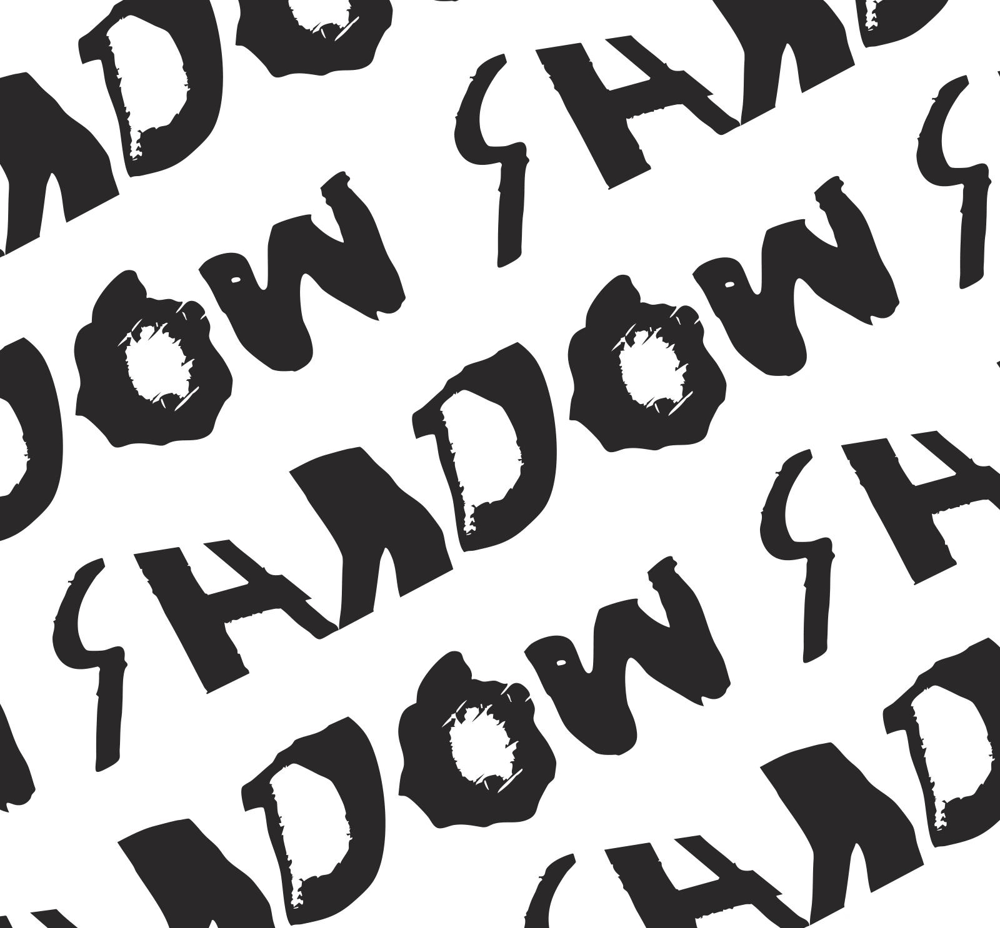
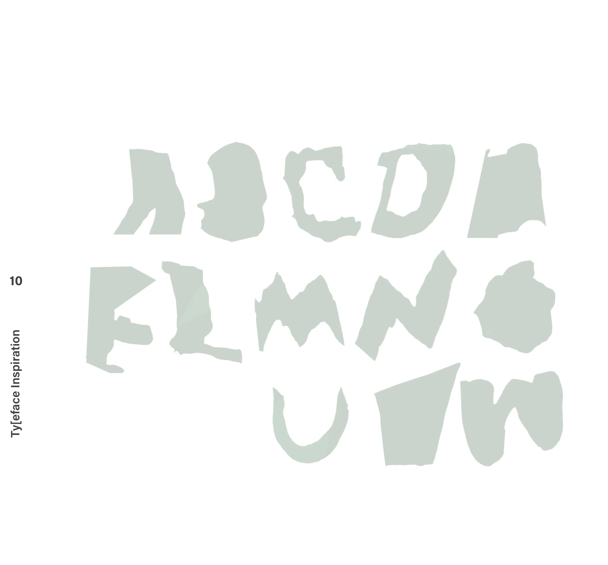
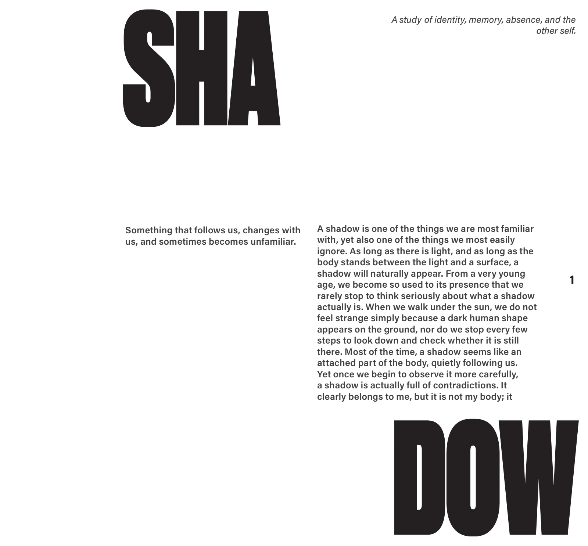
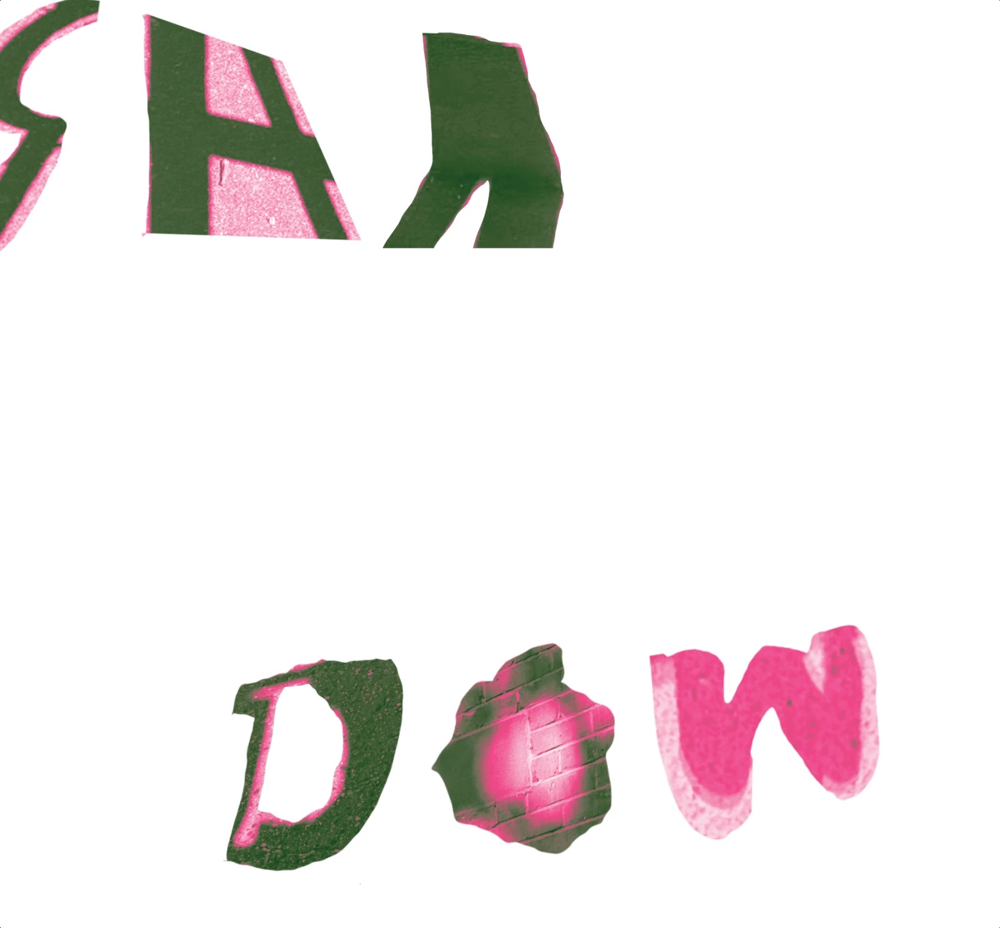

Connected Book
A study of the self, held between pages.

01 / 34
Click either side to turn the page. Or use ← and →.
That page could not load. Please try again.
Between the pages.
Move across the pages. Scroll to shift the layers.


